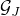

ADMM for the SDP relaxation of the QAP
Background
The quadratic assignment problem (QAP) is one of the hardest NP-hard discrete optimization problems. The semidefinite programming (SDP) relaxation has proven to be extremely strong for QAP by lifting the variable [1]. However, the SDP relaxation for the QAP becomes very large, and traditional methods such as the interior-point method can hardly solve problems of even medium size, say 30.
We reformulate and also strengthen the relaxation model in [1] by splitting variables and adding more constraints. Then we employ the alternating direction method of multiplier (ADMM) to solve the strengthened model with or without an additional low-rank constraint. We obtain very sharp lower bound on benchmark datasets within much shorter time compared to the best existing method.
Notation and our method
The QAP problem can be formulated as
where and are real symmetric matrices, is a real matrix, and denotes the set of permutation matrices. By lifting variable, [1] relaxed the original QAP problem into

where  is a sampling operator (also called gangster operator) picking the elements in the index set , is a matrix with all zeros except the top-left one, is a basis matrix (see our report), and
We introduce another variable and enforce and also restrict , resulting in the following model
Then the ADMM method is applied to solve the above model with or without the rank-one constraint . Due to the introducing of , every step in the ADMM method has closed form solution, and numerically ADMM is very efficient on solving our problem.
Numerical results
We test our method on 45 benchmark QAP instances. Compared to the best existing lower bound (column 2 by Bundle method [2]), our method improves the lower bound on every instance. In addition, our method is very fast, in particular when there is a low-rank constraint (column 9).
Matlab code
Citation
D. Oliveira, H. Wolkowicz, and Y. Xu. ADMM for the SDP relaxation of the QAP. arXiv1512.05448, 2015.
References
. Q. Zhao, S.E. Karisch, F. Rendl, and H. Wolkowicz. Semidefinite programming relaxations for the quadratic assignment problem, J. Combinatorial Optimization, 2(1): 71–109, 1998.
. F. Rendl and R. Sotirov. Bounds for the quadratic assignment problem using the bundle method. Math. Program., 109 (2–3, Ser. B): 505–524, 2007
« Back